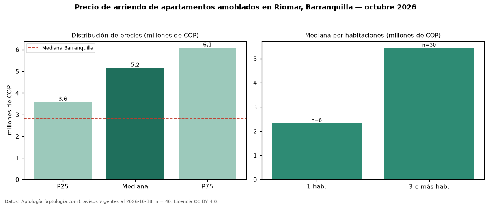

Precio de arriendo de apartamentos amoblados en Riomar, Barranquilla — octubre 2026
En Riomar, Barranquilla, la mediana de canon mensual de apartamentos amoblados es COP 5,15 millones, según 40 avisos vigentes. Frente a la mediana de todos los apartamentos en arriendo de Riomar (COP 4,10 millones, n = 207), queda 26 % por encima; este segmento reúne el 19 % de esos avisos. Por metro cuadrado, la mediana es COP 50.037/m² al mes (n = 38), 22 % por encima del conjunto de referencia (COP 40.952/m²). El área mediana anunciada es 115 m². El segmento con más oferta es el de 3 o más habitaciones (30 avisos, mediana COP 5,45 millones); pasar de 1 habitación a 3 o más habitaciones cambia la mediana +133 %. La administración mediana declarada es COP 550.000 al mes (n = 24), aparte del canon. El estrato más frecuente es 5 (55 % de los avisos con estrato). La mitad central de los avisos va de COP 3,58 millones a COP 6,09 millones (razón 1,7), una dispersión moderada. Datos: Aptología (aptologia.com), CC BY 4.0 — https://www.aptologia.com/arriendo/barranquilla/riomar. Archivos: PDF, CSV con las cifras y gráfica PNG.

| Avisos únicos | 40 |
|---|---|
| Percentil 25 | COP 3.575.000 |
| Mediana | COP 5.150.000 |
| Percentil 75 | COP 6.090.000 |
| Mediana por m² | COP 50.036 |
Fuente: avisos vigentes de portales inmobiliarios recopilados por Aptología, deduplicados (mínimo 30 avisos únicos por celda). Precios pedidos, no cerrados. Fecha: 2026-10-18.